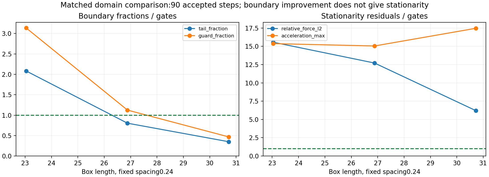
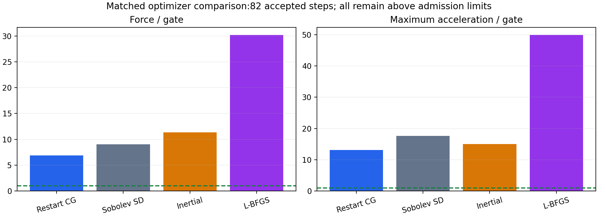

Machine-readable assessment · All endpoints


Source: 20261122t010359z-34c3b904. Completed 22 November2026 at 07:03 UTC / 18:03 Australia/Melbourne. This assessment is based on the compact evidence;82 full field/curve files, totaling about 7.71 GiB, remain on the workstation and were not replayed here.
The campaign completed 1412 accepted optimizer updates across 15 relaxed branches. Two fresh starts failed initial representation checks and received zero updates; two curvature-direction branches were explicitly deferred. The maximum allocation was 2300, so 888 attempts remain unused; they are not authorization to reopen completed branches. Nine relaxed branches reached their individual100-attempt caps and six stopped under the measured-progress policy. Exact-CG stopped after 90 of its500 available attempts. This does not constitute a500-attempt convergence experiment.
No Q21 observation passed strict stationarity or all readiness gates. The retained Q2 instrument control and the directional derivative check passed. All1412 new CPU/CUDA energy-gradient audits passed; all 17 initialized computational branches selected CUDA. Energy decreased monotonically in every relaxed branch. Telemetry records no OOM, OOM-kill or hard-memory-limit events. Physical-time integration attempts:0; motion was correctly deferred because no mesh-admitted candidate existed.
| Endpoint | Accepted updates | Relative force | Maximum acceleration | Tail fraction | Guard fraction | Boundary admitted |
|---|---|---|---|---|---|---|
| Restart-CG, L23.04,h0.24 | 100 | 0.000746458 | 0.0141410 | 0.00156133 | 0.00313497 | No |
| Domain+8 per side, L26.88,h0.24 | 100 | 0.000739706 | 0.0111034 | 0.000603237 | 0.00112569 | No:guard fails |
| Domain+16 per side, L30.72,h0.24 | 90 | 0.000620818 | 0.0174658 | 0.000262415 | 0.000468216 | Yes |
| Required limits | 0.0001 | 0.001 | 0.00075 | 0.001 |
The larger domain is the clearest actionable result. Boundary admission remained true throughout that branch, including after 90 actual relaxation updates, while stationarity still failed. Its final force and acceleration are6.21 and17.47 times their limits. Initial zero padding alone would have been insufficient evidence of domain convergence. The final relaxed tail/guard results are stronger, but neither continuum nor domain convergence has been established. At matched step90, the smaller and larger padded boxes differ in energy by about 0.039%; their residuals remain unconverged and their full overlapping fields have not been compared here.
Use the retained domain-pad-16 endpoint as the common parent for the next diagnostic, preserving its129-cubed grid,L30.72,spacing0.24 and optimizer memory. The source is arms/domain-pad-16/endpoint.npz in the completed run. This is a boundary-admitted unresolved preparation, not a stable solution.
| Method | Relative force | Maximum acceleration |
|---|---|---|
| Restart-CG | 0.000690750 | 0.0131304 |
| Sobolev steepest descent | 0.000903155 | 0.0176271 |
| Inertial descent | 0.00113569 | 0.0150221 |
| Projected three-pair L-BFGS | 0.00301658 | 0.0498378 |
Restart-CG is the strongest matched reference among these four methods at this observation. No method solved admission. L-BFGS continued to reduce energy but ended with much worse residuals; this demonstrates why energy descent alone is an inadequate stopping criterion. It does not establish that every BFGS implementation or longer trajectory fails. The exact-memory branch and reset branch also used different final attempt counts, so their endpoints should not be presented as an equal-work comparison.
The positive0.02 bending perturbation temporarily reached maximum acceleration0.00842 at step93; its retained best joint-residual state is step79, not93 or100. No bend passed stationarity. The force/acceleration dependency fits fail the registered25% validation limit, so no fitted bend optimum supports admission or a broad new sweep.
At fixed L23.04, the129/161-node endpoints have energies12.38182/12.38849, but both remain nonstationary and boundary-rejected. Their final forces are0.00256837/0.00118259 and accelerations0.0323183/0.0374607. Finer sampling improved the approximate Hopf integral of the interpolated parent toward21; it did not deliver a relaxed equilibrium within 100 updates. This is not a continuum convergence test of stationary solutions. Combining finer spacing with the now boundary-admitted larger box remains an untested interaction, to be approached with box fixed and spacing as the sole changed factor after the residual audit.
The fresh torus72 start measured |Q|=19.8702, a5.38% deficit against the5% gate. The fresh torus23 start measured |Q|=1.1133 with a negative cone margin. Both were correctly stopped before relaxation. These are unresolved sampled initializations, not failed stability tests of those families. Their map/profile representation should be qualified versus spacing before any further optimizer allocation. Original labels are not final knot identifications.
Regular-target preimage extraction returned two closed components throughout the15 relaxed endpoints, with no ambiguous tetrahedra. Length and writhe change modestly under many probes. This offers no clear evidence of a new configuration basin, but does not determine knot type. Raw polygon bending values vary strongly and require arclength/smoothing/refinement qualification before physical interpretation.
All eight tested constrained-Hessian eigenvalues were positive at the original iteration335 field. The smallest was approximately8.74375e-5 and agreed at the two perturbation scales. This is a reliable result in the declared eight-dimensional smooth subspace. It is not the global minimum eigenvalue, does not include every localized/high-frequency direction, and does not characterize the newly relaxed larger-domain endpoint. It proves neither stability nor absence of buckling/other minima.
The static measured scale sweep is lowest at scale1. The quadratic fit suggests about 0.99839, but that point was not directly measured and is not an admission condition. No further small scale tweak is justified by this alone. The continuum E2/E4 scaling proxy does not quantitatively reproduce the finite-box sampled-scale energies; finite-domain, discretization and mapping effects need separate treatment.
The current relative-error fit check divides by the total response. For almost constant total energy this can mark poor models valid. An independent leave-one-out comparison against a constant predictor gives absolute RMSE0.00920 for the constant model,0.01474 for linear,0.01473 for exponential and0.00178 for quadratic on the scale-energy sweep. Only the quadratic improves on that baseline. Future fit validation should also require predictive skill against a constant model and accuracy on the measured variation, with noise/roundoff floors. No model is allowed to infer readiness.
Internal rotation, massive potentials, periodic strings and supercurrent coupling remain distinct model/applicability questions. This campaign did not run them. Its results do not justify adding a potential or claiming motion is a necessary stabilizer. Historical Q22 remains deferred; no new Q22 field was recovered or evaluated in this campaign.
The ZIP has valid CRCs, unique members and complete checksum coverage.240 of 241 hashed members match. The only mismatch is telemetry.jsonl: the expected hash matches its first 4310 records exactly, while the archive contains 4311. The extra sample was appended by the supervisor while the worker sealed the archive. All scientific records,19 branch completion seals and embedded copies agree.
This is a sealing race in the supplied handover, not evidence of a numerical corruption. It prevents an honest claim that the original archive passes complete verification. Preserve that original unchanged. The included repair requires an inactive service and takes the worker lock, validates all scientific payloads, captures stable append-only telemetry, adds this assessment, and produces a fully checked replacement compact archive. No numerical steps or scientific data edits occur.